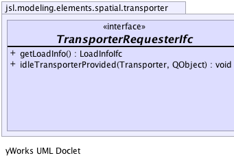
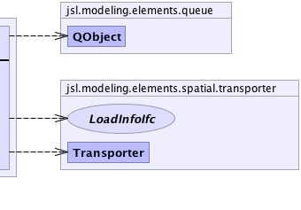

|
||||||||||
| PREV CLASS NEXT CLASS | FRAMES NO FRAMES | |||||||||
| SUMMARY: NESTED | FIELD | CONSTR | METHOD | DETAIL: FIELD | CONSTR | METHOD | |||||||||
public interface TransporterRequesterIfc
|  |  |
| Method Summary | |
|---|---|
LoadInfoIfc |
getLoadInfo()
|
void |
idleTransporterProvided(Transporter transporter,
QObject request)
|
| Method Detail |
|---|
void idleTransporterProvided(Transporter transporter,
QObject request)
LoadInfoIfc getLoadInfo()
|
||||||||||
| PREV CLASS NEXT CLASS | FRAMES NO FRAMES | |||||||||
| SUMMARY: NESTED | FIELD | CONSTR | METHOD | DETAIL: FIELD | CONSTR | METHOD | |||||||||